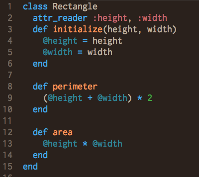
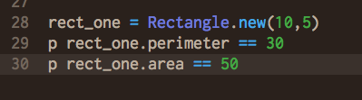
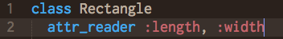
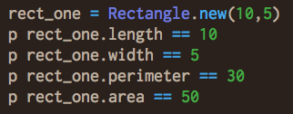
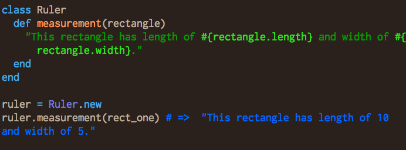

... my unexpected journey into a world of codes
Week-4 Technical Blog 09/04/14
In object oriented programming(OOP), codes are written to model objects in the real world. Such object will have its own attributes and behaviors. While the state(data) within the object will set its attributes, the methods(codes) set the behaviors. A class in OOP is simply the blueprint for objects. While you create an object, it is an instance of its class. Say that you are creating a coin, an object that has attributes like shape, weight, height(maybe), the material it is created(color), and the emblems on its head and tail. All these attribute can be grouped into a class, a blueprint for all the coins, and each individual coin is an instance of this class. Now that a coin has certain behaviors, it can be carried in a pocket, spend in a transaction, or just been thrown high up in the air. All these behaviors can also be grouped as methods inside the coin class. Object attributes set them apart from one another: a quarter is of different size, made of different material, has different weight and different emblems than a penny. Methods produce outcomes that is depended on the attributes of the coin object. How high can it be thrown? This behavior might be affected by the outside force, and the internal attribute: weight, which can be determined by another internal attribute: material made. Similarity, how it is carried, or spend all follows this logic. Now lets take a look at another simple object, an rectangle. What does a rectangle have? 4 sides, 2 shorter ones we call the width and 2 longer ones we call length. How does it behave? Stuff can be put in it (the area) and people can walk around it (the perimeter). The blueprint, a Rectangle class, has an initialize method that set the object's attributes: length and width. A method to calculate the perimeter and another to calculate the area.  When a rectangle object is being created, the initialize method within the class takes two arguments and set the object's attributes accordingly. These attributes are called the instance-variables which can be used by methods within this class for this particular object (remember that different objects will have different values (data) for its attributes). Now that an rectangle object has been created, you can call the methods from within its class. As you can see, both perimeter and area methods produces outcome that depends on the object's length and width.  Just like real-life objects, this rectangle can interact with other objects too. Recalled that the instance-variables are only accessible by the methods of that object. First, we need to change that by giving our class a getter method that returns the desired instance-variable. This can be done by using attr_reader or actually write out the within the class.   Now, a method outside of the class can get access to the instance variable of objects from the rectangle class. Consider that an object from a ruler class that has a method that will return the length and width of a rectangle.  Of course, the ruler can get the measurements from our rectangle is only because we allowed the measurements to be read from outside the class. Similarity, we can have the measurements of the rectangle object to be changed by outside of its class via attr_writer (or a setter method) and even do both via attr_accessor (a getter and a setter method). Surely, there are many reasons that we need to protect the measurements of our dear little rectangle that nothing outside of its class are able to change it's measurements after creation.